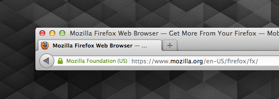
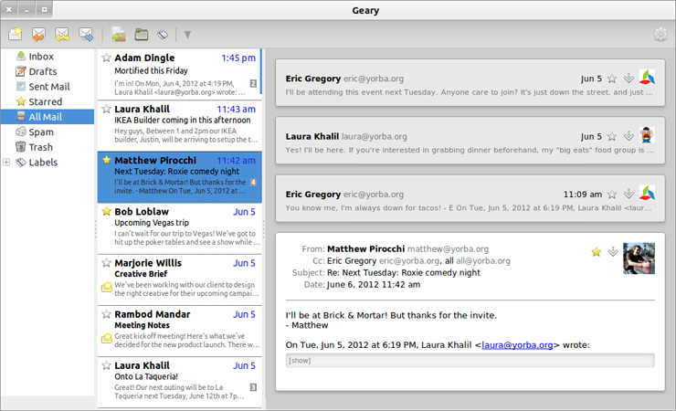

La fondation Mozilla a annoncé la disponibilité immédiate de Firefox et Thunderbird pour Linux, Mac OS X et Windows, ainsi que Firefox mobile pour Android.
Après une treizième livrée plutôt riche en nouveautés, les habituels détracteurs de la fondation au dinosaure seront ravis d'apprendre que cette fois-ci, les versions Linux, MacOS X et Windows en apportent peu. Malheureusement pour eux, la version Android est toute neuve et récolte une critique globalement enthousiaste.
Comme d'habitude, les intéressés pourront trouver plus de détails dans la seconde partie de la dépèche.
Merci à Nÿco, Yves Bourguignon, Xavier Claude, zliss et Brndan pour leurs contributions à l'article.
Firefox
Au menu des nouveautés, outre les habituelles corrections de bugs, nous trouvons pour cette version :
Pour les utilisateurs
- L'autocomplétion est disponible pour les URL tapées dans la barre d'adresse
- La recherche Google par défaut utilise HTTPS.
- Meilleur support du plein écran pour Mac OS X 10.7
- Opt-in possible pour les plugins.
- Les favicons (petite icône associée à un site, une tête de manchot sur ce site) ne sont plus affichées dans la barre d'adresse. Cette modification vise à empêcher des sites malveillants de tromper l'utilisateur en utilisant une favicon ressemblant à un verrou, et ainsi faire croire à l'utilisateur qu'il est bien sur un site sécurisé. La favicon est au niveau de l'onglet, l'icône SSL au niveau de l'adresse URL.

Pour les développeurs
- API de prise en charge de la capture de la souris (pointer lock API) : les applications plein écran peuvent mieux prendre le contrôle de la souris en retirant le pointeur de l'écran et en laissant l'application contrôler et gérer les mouvements de la souris directement.
API permettant d'empêcher la mise en veille de l'écran.
Il est maintenant possible d'utiliser les pseudo classes lors de l'inspection d'une page (plus de détails).
Firefox Mobile
- Nouvelle interface, beaucoup plus réactive, sans XUL. L'interface utilisateur est également plus léchée.
- Firefox sur Android est maintenant compatible avec Adobe Flash.
- Les plug-ins sont bloqués par défaut. Ce comportement est désactivable via about:config en mettant l'option
plugins.click_to_playà false.
Thunderbird
- Ajout d'Ubuntu One pour le stockage des pièces jointes de Filelink
- Correction d'une centaine de bugs
Comme vu dans le journal LinuxFr.org de Colargol (L'été meurtrier chez Mozilla), la fondation a annoncé ne bientôt plus financer l'ajout de fonctionnalités pour Thunderbird. Seules les mises à jour de sécurité et les corrections de bugs seront maintenues.
Mozilla souhaite passer la main à la communauté pour les évolutions. Tristan Nitot, de Mozilla Europe, apporte quelques précisions sur son weblog.
Ce changement est applicable à partir de la version 16.
Dans le tuyau !
- API de contrôle de la webcam (pour la version 16).
- Firefox Social : notifications, news feed, messagerie instantanée, API pour utiliser tout cela.
- L'interface graphique des versions Mobile et classique sera unifiée.
- Mises à jour silencieuses - plus besoin d'attendre l'installation de la mise à jour au redémarrage de Firefox.
- Intégration de PDF.js (lecteur PDF en JavaScript inclus dans le navigateur).
- Firefox Junior, test d'une version pour iOS de Firefox, utilisant Webkit (Apple interdisant les moteurs de rendu tiers sur son système).
- Le vieux serpent de mer : le gestionnaire de téléchargements est intégré dans la fenêtre. Cliquez sur un bouton et une bulle apparaît avec la liste des téléchargements, reprenant l'idée d'anciennes maquettes de Mozilla, reprises depuis par Safari également.
[-] # Explications ?
Posté par Tanguy Ortolo (page perso, jabber id) . Évalué à 7.
Euh, la barre d'adresse à suggestion, ça n'a rien de nouveau. Qu'est-ce qui change au juste avec cette version ?
Qu'est-ce que c'est ?
[^] [-] # Re: Explications ?
Posté par Xavier Claude (page perso, jabber id) . Évalué à 10.
L'autocomplétion.
« Moi, lorsque je n’ai rien à dire, je veux qu’on le sache. » Raymond Devos
[^] [-] # Re: Explications ?
Posté par Tanguy Ortolo (page perso, jabber id) . Évalué à 2.
Comme dans un shell, genre tu commences à taper l'adresse, tu appuies sur ⇥ et ça complète avec l'adresse connue qui correspond, ou ça affiche une liste si plusieurs correspondent ?
Par rapport à la situation actuelle — tu commence à taper et ça affiche immédiatement une liste mise à jour en temps réel, et tu appuies sur ↓ pour sélectionner une adresse — ça me semble plutôt une régression.
[^] [-] # Re: Explications ?
Posté par xenom . Évalué à 4.
D’après les releases notes, il s'agit de ce bug.
L'autocompletion se fait sur chaque partie de l'URL, le nom de domaine puis les différentes parties du chemin.
[^] [-] # Re: Explications ?
Posté par jeberger (page perso, jabber id) . Évalué à 3.
Ça marche comme avant : tu commences à taper et ça affiche immédiatement une liste mise à jour en temps réel, et tu appuies sur ↓ pour sélectionner une adresse. Sauf qu'en plus, il ajoute dans la barre d'URL ce qu'il pense être la meilleure solution. Comme ça tu as juste besoin d'appuyer sur « entrée » si tu es d'accord (mais ce qu'il ajoute est sélectionné donc si tu continues de taper ou si tu appuies sur ↓, tu remplaces ce qu'il a complété sans que ça te dérange).
[^] [-] # Re: Explications ?
Posté par Tanguy Ortolo (page perso, jabber id) . Évalué à 0.
Et si tu ne veux pas qu'il complète, tu fais comment du coup, tu sélectionne jusqu'à la fin et tu appuies sur supprimer ?
[^] [-] # Re: Explications ?
Posté par Thomas Douillard . Évalué à 6.
Non, c'est présélectionné, donc tu n'as qu'à appuyer sur supprimer. En général la présélection diminue si tu tapes des caractères cohérents avec l'entrée autocomplétée, et est remplacée par autre chose ou disparait si ce n'est pas le cas.
[^] [-] # Re: Explications ?
Posté par dinomasque . Évalué à -2.
Ah ! un peu comme Chrome depuis quelques années en fait ;)
BeOS le faisait il y a 15 ans !
[^] [-] # Re: Explications ?
Posté par nerbrume . Évalué à 3.
Justement, j'ai l'impression que ca existait deja, non, via "browser.urlbar.autofill True" (mais ce n'etait pas activé par defaut) ?
Le rapport de bug parle plutot d'une amelioration de cette fonction ("smarter"). J'imagine qu'ils en ont profité pour l'activer par defaut.
[^] [-] # Re: Explications ?
Posté par vermillon . Évalué à 1.
J'espère qu'ils l'ont améliorée, cette fonction. Chez moi, ça ne complète pas pour tous les sites, c'est un peu aléatoire: pour certains sites, ça marche très bien et à la première lettre tapée je peux appuyer sur entrée. Pour d'autres sites, aucune auto-complétion n'intervient et je dois recourir à la flèche-bas.
[^] [-] # Re: Explications ?
Posté par ⁄⁄⁄⁄⁄ Emil Keller ⁄⁄⁄⁄⁄ . Évalué à 5.
Si Firefox essaye d’exécuter un Plug-in avec une faille, Firefox affichera un message d’avertissement, et si le plug-in dispose d’une maj, invitera l’utilisateur à la faire.
Mais ce n'est pas encore prêt.
I will try to access that page, but I cannot access an https page except by asking someone to get it for me.
[^] [-] # Re: Explications ?
Posté par mickabouille . Évalué à 2.
C'est pas plutôt le click-to-play, où les plugins sont désactivés par défaut avec un placeholder à la place du contenu, et il faut cliquer dessus pour lancer le truc (flash en pratique, je suppose) ?
[^] [-] # Re: Explications ?
Posté par ndv (jabber id) . Évalué à 2.
Si.
L'équivalent de l'extension Flashblock, mais pour tous les plugins (Java, Silverlight, et autres cochoncetés)
[^] [-] # Re: Explications ?
Posté par Tanguy Ortolo (page perso, jabber id) . Évalué à 10.
Amusant. Ça va exploser tous les sites Web qui utilisent des applications Flash de zéro pixel carré pour lire du son, et ils sont nombreux…
[^] [-] # Re: Explications ?
Posté par Renault (page perso, jabber id) . Évalué à 7.
Sincèrement, tant mieux qu'on se débarrasse des comportements moisis des webmasters.
Oui à un web standard et à des webmaster respectueux de ses utilisateurs.
[^] [-] # Re: Explications ?
Posté par dyno partouzeur de drouate (page perso, jabber id) . Évalué à 8.
Tant mieux, ça fait une nuisance/polution en moins. Un site web qui me joue une musique ou un jingle publicitaire, c'est à mon avis encore pire que s'il affichait une popup. Autant je peux regarder ailleurs (et généralement fermer le popup), autant je ne peux pas fermer mes oreilles, la seule solution étant de couper le son quand on surfe.
Bon débarras !
[^] [-] # Re: Explications ?
Posté par Tanguy Ortolo (page perso, jabber id) . Évalué à 1.
Et quand le but de ce site est de jouer de la musique ? Deezer par exemple…
[^] [-] # Re: Explications ?
Posté par dinomasque . Évalué à 6.
Deezer propose un player bien visible et surtout, comme l'intention du visiteur est d'utiliser une appli flash, il fera ce qu'il faut.
BeOS le faisait il y a 15 ans !
[^] [-] # Re: Explications ?
Posté par zebra3 (jabber id) . Évalué à 2.
S'il est au courant. Parce que la plupart des gens ne savent pas ce qu'est Flash ni qu'il est nécessaire.
Article Quarante-Deux : Toute personne dépassant un kilomètre de haut doit quitter le Tribunal. -- Le Roi de Cœur
[^] [-] # Re: Explications ?
Posté par eldwane . Évalué à 1.
Mais de souvenir, Deezer n'utilise plus flash… non?
[^] [-] # Re: Explications ?
Posté par Thomas Bigot (page perso, jabber id) . Évalué à 3.
Deezer a migré son interface en html intégral il y a déjà quelques mois. Mais la lecture se fait toujours grâce à une application Flash, pour que le flux sonore ne soit pas téléchargeable en clair.
Aujourd’hui les éléments du lecteur sont en html/javascript, et ils communiquent avec flash qui gère le téléchargement / déchiffrement / décompression du son.
[^] [-] # Re: Explications ?
Posté par FantastIX . Évalué à 2.
LOL! Y a encore du boulot en matière de DRM je vois…
[^] [-] # Re: Explications ?
Posté par djano . Évalué à 4.
T’inquiète! Adobe travaille a ajouter des DRMs a HTML5 après avoir fait une croix sur Flash.
[^] [-] # Re: Explications ?
Posté par Tanguy Ortolo (page perso, jabber id) . Évalué à 5.
Tout ça pour empêcher les gens de faire ce pour quoi ils paient : de la copie privée…
[^] [-] # Re: Explications ?
Posté par gnuzer (page perso, jabber id) . Évalué à 5.
Ben là ils paient pour être privés de copie.
Troll launcher reloading
[^] [-] # Re: Explications ?
Posté par 태 (page perso, jabber id) . Évalué à 4.
Si c'est fait comme dans opera et chromium, il y aura dans la barre d'adresse un petit bouton signalant que des plugins ont été bloqués et permettant de les débloquer. À l'usage, c'est bien plus pratique que flashblock.
[^] [-] # Re: Explications ?
Posté par MTux . Évalué à 4.
owncloud utilise un player flash invisible également.
Mais bon quand on utilise flashblock, même si l'élément fait 1px de large, on a quand même un bouton assez gros pour pouvoir cliquer dessus et le débloquer.
[^] [-] # Re: Explications ?
Posté par rpnpif . Évalué à 4.
Ma, pourquoi employer ce terme abscons de opt-in. À quand la créativité de néologismes en français ?
Ma, pourquoi je n'ai pas relu cette dépêche avant sa publication ? /o\
Un mot ou une expression résumant l'opt-in ?
[^] [-] # Re: Explications ?
Posté par Benoît Sibaud (page perso, jabber id) . Évalué à 3.
accord préalable ?
[^] [-] # Re: Explications ?
Posté par Tanguy Ortolo (page perso, jabber id) . Évalué à 4.
Validation.
[^] [-] # Re: Explications ?
Posté par Nonolapero (page perso, jabber id) . Évalué à 5.
Surtout qu'il semble y avoir trois comportement au choix :
Mais bon je n'ai pas trouvé comment activer le machin.
[^] [-] # Re: Explications ?
Posté par zebra3 (jabber id) . Évalué à 3.
Ce sera pour la version 15. Comme ça ils ont déjà le changelog prêt :-)
Article Quarante-Deux : Toute personne dépassant un kilomètre de haut doit quitter le Tribunal. -- Le Roi de Cœur
[^] [-] # Re: Explications ?
Posté par Nonolapero (page perso, jabber id) . Évalué à 3.
Ce n'est donc pas tout de suite que je vais virer Flashblock.
[^] [-] # Re: Explications ?
Posté par krumtrash . Évalué à 2.
about:config => plugins.click_to_play
[-] # Livrée ?
Posté par jcr83 . Évalué à 10. Dernière modification : le 18/07/12 à 18:01
Le mot livrée ne me semble pas approprié : http://fr.wiktionary.org/wiki/livr%C3%A9e . Il évoque pour moi les vêtements portés autrefois par les domestiques.
Livraison, peut-être ?
[^] [-] # Re: Livrée ?
Posté par frayd . Évalué à 3.
si si, livrée.
Il voulait parler du nouveau pelage du petit panda.
[^] [-] # Re: Livrée ?
Posté par pipotron . Évalué à 2.
Je vais moi aussi me livrer à une tentative :-)
fournée
[^] [-] # Re: Livrée ?
Posté par khivapia . Évalué à 2.
Pourquoi pas Tournée, tant qu'à faire…
C'est Mozilla qui (nous) régale (de cette nouvelle version)
[^] [-] # Re: Livrée ?
Posté par FlashCode (page perso, jabber id) . Évalué à 5.
Oui tout à fait d'accord, et pourquoi pas tout simplement "version", qui est bien plus approprié ici ?
WeeChat, the extensible chat client
[-] # Mais c'est fou !
Posté par Goffi (page perso, jabber id) . Évalué à 10.
Comment ça peut passer ça ? Auprès des devs ? Au niveau légal ? Apple est vraiment devenue une des pires boîtes d'infos actuelle (et pourtant la concurrence est rude).
Où peut on trouver le passage exact qui dit ça ?
[^] [-] # Re: Mais c'est fou !
Posté par Jean-Georges Pinna . Évalué à 5.
Il y a un an, j'ai cherché Firefox pour iOS et sur un des site de la fondation Mozilla, il expliquaient pourquoi il n'y aurait pas de FF pour iOS et c'était justement l'interdiction d'utiliser un autre moteur de rendu (Apparemment c'est la licence du kit de dev iOS qui l'interdit). Je suis trés déçu que la fondation Mozilla ai cédé
[^] [-] # Re: Mais c'est fou !
Posté par ndv (jabber id) . Évalué à 2.
Google a fait pareil avec Chrome, qui utilise le webkit d'Apple, sans V8 (le moteur Javascript de Google).
Firefox Junior reste un projet, qui finira peut-être dans /dev/null comme pas mal d'autres chez Mozilla (raindrop, prism, etc.)
[^] [-] # Re: Mais c'est fou !
Posté par ⁄⁄⁄⁄⁄ Emil Keller ⁄⁄⁄⁄⁄ . Évalué à 9.
Depuis toujours, et le webKit auxquels accèdent les applis tierces n'a pas accès au JIT.
http://arstechnica.com/apple/2011/06/ios-5-brings-nitro-speed-to-home-screen-web-apps/
I will try to access that page, but I cannot access an https page except by asking someone to get it for me.
[^] [-] # Re: Mais c'est fou !
Posté par vpo . Évalué à 10.
Moi j'ai trouvé un moyen super simple pour ne pas être embêté avec les produits Apple : je n'ai pas de produit Apple. Je donne mes sous à d'autres fabricants "moins pires" à défaut d'être mieux…
[^] [-] # Re: Mais c'est fou !
Posté par Kerro . Évalué à 8.
[^] [-] # Re: Mais c'est fou !
Posté par omer666 . Évalué à 8.
Et voilà pourquoi quand on est un ex-mac user de longue date, on est très content d'avoir quitté le navire !
[-] # Firefox Mobile
Posté par zebra3 (jabber id) . Évalué à 10.
Firefox Mobile 14 était déjà bien plus rapide en version beta, mais je préférais largement l'interface précédente. L'idée de faire glisser la page d'un côté où de l'autre pour faire apparaître les onglets et autres fonctionnalités était intéressante.
Dommage d'être passé au comportement plus classique du navigateur par défaut d'Android.
Article Quarante-Deux : Toute personne dépassant un kilomètre de haut doit quitter le Tribunal. -- Le Roi de Cœur
[^] [-] # Re: Firefox Mobile
Posté par solsTiCe (page perso) . Évalué à 3.
pas pu encore testé firefox sur mobile:
"Cette application n'est pas compatible avec votre xxxxxxx."
Tiens pourquoi pas compatible ?
[^] [-] # Re: Firefox Mobile
Posté par Thomas Bigot (page perso, jabber id) . Évalué à 4.
Cela dépend du processeur du smartphone.
Firefox n’est pas écrit en Java, et il y a donc une compilation / optimisation spécifique par famille de processeur.
[-] # PDF.js inclus dans le navigateur ? WAT !
Posté par Encolpe DEGOUTE (page perso, jabber id) . Évalué à 4.
J'ai du mal à suivre en fait. PDF.js est un toolkit permettant aux sites qui le souhaitent d'afficher directement le contenu des PDF. Soit. Pourquoi l'intégrer dans le navigateur ?! Nous voulons juste un navigateur, pas un clone d'emacs ou de ChromeOS !
[^] [-] # Re: PDF.js inclus dans le navigateur ? WAT !
Posté par ⁄⁄⁄⁄⁄ Emil Keller ⁄⁄⁄⁄⁄ . Évalué à 10.
J’aime bien ne pas avoir à systématiquement enregistrer sur mon disque un PDF juste pour le lire.
I will try to access that page, but I cannot access an https page except by asking someone to get it for me.
[^] [-] # Re: PDF.js inclus dans le navigateur ? WAT !
Posté par Arcaik . Évalué à 10.
Moi j’aime bien que ça soit mon lecteur de PDF qui lise mes PDF.
Je sais, ça peut paraître étonnant.
[^] [-] # Re: PDF.js inclus dans le navigateur ? WAT !
Posté par Grunt (jabber id) . Évalué à 9.
C'est une drôle d'idée : pendant qu'il fait ça, il ne peut pas afficher de vidéo !
THIS IS JUST A PLACEHOLDER. YOU SHOULD NEVER SEE THIS STRING.
[^] [-] # Re: PDF.js inclus dans le navigateur ? WAT !
Posté par Juke (page perso, jabber id) . Évalué à 8.
Où est-il enregistré alors ?
[^] [-] # Re: PDF.js inclus dans le navigateur ? WAT !
Posté par Grunt (jabber id) . Évalué à 2.
Dans la RAM. On a décidé que c'était mieux de prendre plein de Mo dans ta RAM, plutôt que plein de Mo dans ton disque dur. C'est comme ça faut pas discuter.
THIS IS JUST A PLACEHOLDER. YOU SHOULD NEVER SEE THIS STRING.
[^] [-] # Re: PDF.js inclus dans le navigateur ? WAT !
Posté par Juke (page perso, jabber id) . Évalué à 6.
C'est aussi possible sans PDF.js (du moins c'est le comportement par default sur ma machine, sauvegarde dans /tmp/ qui est en tmpfs)
[^] [-] # Re: PDF.js inclus dans le navigateur ? WAT !
Posté par Tanguy Ortolo (page perso, jabber id) . Évalué à 3.
Pluzun, c'est ce qui se fait chez moi quand je choisis l'option « afficher » après avoir cliqué sur un lien.
[^] [-] # Re: PDF.js inclus dans le navigateur ? WAT !
Posté par Xavier Claude (page perso, jabber id) . Évalué à 3.
Vous oubliez un peu que la majorité des utilisateurs de Firefox sont sous Windows et n'y connaissent (ne veulent y connaïtre) rien sur l'utilisation de leur ordinateur. Il font donc aussi que Firefox s'intéresse à ce public. Et si ça leur permet d'avoir un lecteur PDF plus léger dans le navigateur sans qu'ils ne doivent rien faire, ils seront content.
« Moi, lorsque je n’ai rien à dire, je veux qu’on le sache. » Raymond Devos
[^] [-] # Re: PDF.js inclus dans le navigateur ? WAT !
Posté par Grunt (jabber id) . Évalué à 10.
Je déteste cette argumentation populiste qui consiste à tout sacrifier au fait que "le luser qui connaît rien et s'en fout voit un bénéfice immédiat", en rejetant toute réflexion à plus long terme.
Cette politique commerciale est une des causes de l'état déplorable de la micro-informatique grand public. Vente liée ? botnets ? Spam ? Atteinte à la neutralité ? Détournement d'Internet en "Web 2.0" au profit d'une poignée de marchands de vie personnelle ? Pas grave tout ça : le luser qui connaît rien, et qui s'en fout, il est content d'avoir son Windows préinstallé, il est content d'avoir son jeu cracké même si ça fait un peu ramer son PC, il est content d'avoir de l'ADSL illimité à 20€/mois même si on fouille son courrier, il est content de voir ses zamis sur Facebook. Et bientôt il sera content d'avoir encore un truc de plus pour alourdir son navigateur INTERNET. Entre l'absence totale de recul sur ce que devient le Web, et l'abandon de Thunderbird, Mozilla est en train de déblayer le terrain pour faire de la place à l'autoroute Google. C'est très gentil à eux, remarque. Quand Google les écrasera à coups de Chrome machines où y'aura juste un noyau Linux et un navigateur INTERNET, ils diront merci à Mozilla pour ce magnifique travail de sape de ce qu'était la diversité d'Internet (le vrai, celui où une ressource n'est pas forcément affichée dans un navigateur et n'est pas forcément téléchargée via HTTP).
THIS IS JUST A PLACEHOLDER. YOU SHOULD NEVER SEE THIS STRING.
[^] [-] # Re: PDF.js inclus dans le navigateur ? WAT !
Posté par Xavier Claude (page perso, jabber id) . Évalué à 6.
Sauf que je ne vois pas le problème que ça pose, tu peux toujours utiliser un plug-in pour lire les PDF si tu veux.
« Moi, lorsque je n’ai rien à dire, je veux qu’on le sache. » Raymond Devos
[^] [-] # Re: PDF.js inclus dans le navigateur ? WAT !
Posté par zebra3 (jabber id) . Évalué à 0.
Le problème qu'il pointe, c'est que la plupart des utilisateurs ne le feront pas (et ne sauront même pas de quoi on parle) et que ça conditionne les choix futurs de Mozilla.
Et rien n'empêche qu'un jour, Mozilla décide de l'enlever parce « c'est une fonction utilisée par trop peu d'utilisateur ». C'est bien ce qu'ils font pour Tb : trop peu d'utilisateurs → plus de développement.
Article Quarante-Deux : Toute personne dépassant un kilomètre de haut doit quitter le Tribunal. -- Le Roi de Cœur
[^] [-] # Re: PDF.js inclus dans le navigateur ? WAT !
Posté par ElectronLibre63 . Évalué à 0.
Marrant, j'aurais dit le contraire : trop peu d'utilisateurs → moins de développement.
[^] [-] # Re: PDF.js inclus dans le navigateur ? WAT !
Posté par zebra3 (jabber id) . Évalué à 1.
J'ai écrit « plus de » au sens « pas de ». J'aurais dû mettre « arrêt du développement », ça aurait été plus clair.
Article Quarante-Deux : Toute personne dépassant un kilomètre de haut doit quitter le Tribunal. -- Le Roi de Cœur
[^] [-] # Re: PDF.js inclus dans le navigateur ? WAT !
Posté par ElectronLibre63 . Évalué à 4.
Sauf que ce sens n'existe pas.
D'après le dico de l'Académie française (9e édition) :
À l'oral cette erreur passe car plus ne se prononce généralement pas de la même façon.
Tout à fait d'accord, là au moins il n'y a pas d’ambiguïté.
[^] [-] # Re: PDF.js inclus dans le navigateur ? WAT !
Posté par Arcaik . Évalué à 3.
Moi j’ai ça comme définition pour « plus de » :
[^] [-] # Re: PDF.js inclus dans le navigateur ? WAT !
Posté par Redskull . Évalué à 6.
Sauf que si (toujours le dico de l’Académie) :
Pour le lien, l’accès par le C.N.R.T.L. m’a l’air plus efficace : plus.
[^] [-] # Re: PDF.js inclus dans le navigateur ? WAT !
Posté par Xavier Claude (page perso, jabber id) . Évalué à 5.
Ça ne change rien à la situation actuelle où les utilisateurs ne font rien et c'est le plug-in adobe qui est pris.
Je ne vois toujours pas le problème, s'ils l'enlèvent parce qu'il n'y a plus grand monde qui l'utilise, ça ne dérangera pas grand monde. Mais il me semble que pour Thunderbird, c'est plus un manque de modèle financier que d'utilisateur qui cause son abandon, la fondation préférant financer d'autres secteurs qui lui semble plus importants.
« Moi, lorsque je n’ai rien à dire, je veux qu’on le sache. » Raymond Devos
[^] [-] # Re: PDF.js inclus dans le navigateur ? WAT !
Posté par cykl . Évalué à 5.
En même temps ils font bien ce qu'ils veulent. Si tu veux absolument ton plugin, thunderbird ou un fonctionnalité tu peux aussi te sortir les doigts. Pour le moment ils te fournissent l'outil que tu utilises tout les jours et t’accueilleront à bras ouvert pour toute contribution.
[^] [-] # Re: PDF.js inclus dans le navigateur ? WAT !
Posté par mickabouille . Évalué à 7.
Juste pour remplacer le plugin pdf installé sur beaucoup de machines. Bon, chez moi, les pdf s'affichent dans un programme externe, mais chez beaucoup, c'est acrobat reader incorporé qui s'exécute. Et c'est lent. Pour avoir testé (l'addon pdf.js), on passe de 15-20 secondes de lancement à 2-3 secondes.
Moi je le trouve bien ce truc. Le gros problème que je vois c'est l'incompatibilité avec le "ne pas autoriser les sites web à choisir leur police".
[^] [-] # Re: PDF.js inclus dans le navigateur ? WAT !
Posté par patrick_g (page perso) . Évalué à 5.
Un autre gros problème c'est le rendu de certains pdf. J'ai testé il y a quelques semaines et ça déconne encore pas mal.
[^] [-] # Re: PDF.js inclus dans le navigateur ? WAT !
Posté par Xavier Claude (page perso, jabber id) . Évalué à 6.
La gestion des polices est déjà en cause. J'ai utilisé pdf.js via owncloud et j'ai vu que certains PDF issus de LaTeX donnent bien mieux sous Linux que sous Windows (ce qui est étrange, car ça passe très bien dans Adobe Reader sous Windows).
« Moi, lorsque je n’ai rien à dire, je veux qu’on le sache. » Raymond Devos
[^] [-] # Re: PDF.js inclus dans le navigateur ? WAT !
Posté par CrEv (page perso) . Évalué à 7.
Non non, tu veux ça.
Mais pour beaucoup ça permet de lire des pdf sans se soucier de savoir si acrobat est présent ou non. C'est aussi parfois plus pratique pour inclure des pdfs dans des pages que si c'est un plugin (par exemple pour inclure des slides dans une page, sur un blog, etc).
En fait c'est exactement la même chose que d'avoir un lecteur de vidéo HTML5 dans les navigateurs. Certains préfèrent lancer un mplayer en ligne de commande à côté, beaucoup préfèrent naviguer et voir leur contenu s'afficher directement (en plus du fait que ça permet beaucoup plus de choses)
[^] [-] # Re: PDF.js inclus dans le navigateur ? WAT !
Posté par Tanguy Ortolo (page perso, jabber id) . Évalué à 10.
C'est vrai, on aurait tendance à oublie qu'il existe encore des systèmes d'exploitation qui n'intègrent pas de lecteur PDF par défaut.
[^] [-] # Re: PDF.js inclus dans le navigateur ? WAT !
Posté par baud123 (page perso, jabber id) . Évalué à 10.
moi je préférais le mplayer proposé d'être lancé par le navigateur quand il y a une vidéo sur la page, je n'ai pas retrouvé cette fonctionnalité de epiphany depuis quelques temps :/
Cela explique que je ne clique que sur un lien sur 5 contenant "youtube" (et 1/10 avec dailymotion), vu que ma conf' "je veux utiliser HTML5" ne semble pas conservée de session en session :/ (ou qu'il y ait trop de x264…). C'est bien rageant ces rappels à télécharger adobe flash player alors que j'ai tout d'installé pour lire la balise vidéo HTML5 pour les formats ouverts ou un lecteur vidéo pour plein de formats. Mais je suis sans doute seul dans ce cas :/
[^] [-] # Re: PDF.js inclus dans le navigateur ? WAT !
Posté par Guts (jabber id) . Évalué à 1.
Non j'ai eu aussi le problème. J'étais très content de voir apparaître le programme HTML5 de Youtube, de voir arriver ça aussi sur dailymotion et d'autres mais j'ai vite déchanté. Malheureusement j'en reviens toujours au plugin flash… mais un jour j'arriverais à l'éradiquer !
Si tu polishes ta caisse, elle brille !
[^] [-] # Re: PDF.js inclus dans le navigateur ? WAT !
Posté par jihele . Évalué à 2.
J'avais posé la question dans le forum.
Dans la pratique, j'ai un iceweasel avec le plugin gnash qui était installé avec ma distrib (ça dépanne pour quelques sites avec un peu de navigation en flash, enfin quand ça marche), et un midori pour lequel le plugin gnash ne fonctionne pas et qui donc me propose HTML 5 bien comme il faut. Mais c'est pénible de devoir choisir selon l'usage.
Au boulot c'est plus confortable, je n'ai pas installé le plugin flash pour firefox donc il me propose HTML 5 dès que c'est possible. Et ça marche pas mal. Mais je n'ai pas les videos en flash (je ne les ai pas non plus avec gnash, de toutes façons).
En résumé, ça marche pas si mal quand les videos sont disponibles, la difficulté étant de donner la priorité à HTML 5 quand on a un plugin flash présent. Ça devrait pourtant pas être si compliqué. Comme piste, j'avais envisagé un truc qui me modifierait les infos envoyées par le navigateur pour masquer la présence du plugin flash. Mais je n'ai pas trouvé. En fait, j'ai pas cherché…
Je ne suis pas rentré dans les "détails" des codecs non plus. Peut-être que HTML 5 ne fonctionne pas pour toutes les videos sur toutes les configs.
[^] [-] # Re: PDF.js inclus dans le navigateur ? WAT !
Posté par Tanguy Ortolo (page perso, jabber id) . Évalué à 4.
https://addons.mozilla.org/firefox/addon/flashvideoreplacer/
[^] [-] # Re: PDF.js inclus dans le navigateur ? WAT !
Posté par pralines (page perso) . Évalué à 1.
merci
(le site des addons ne voulait pas m'envoyer cette extension, j'ai cru qu'il s'était fait /.é )
Envoyé depuis mon Archlinux
[^] [-] # Re: PDF.js inclus dans le navigateur ? WAT !
Posté par Grunt (jabber id) . Évalué à 8.
La solution mplayer permet aussi beaucoup de choses que la solution "dans la page Web" ne permet pas (ou pas de façon certaine).
Copier la vidéo en local, l'envoyer à quelqu'un d'autre qui a une configuration différente en étant à peu près certain qu'il peut la lire, laisser la vidéo se dérouler en arrière plan en n'écoutant que le son (90% de l'information) tout en lisant le site Web, voire extraire la piste son pour l'envoyer à quelqu'un ayant une connexion bas débit, mettre la vidéo en plein écran, la mettre sur pause, basculer entre mplayer et le navigateur, en n'utilisant que des raccourcis claviers mémorisés par coeur (ceux du gestionnaire de fenêtre et ceux de mplayer), et pas en dépendant de la façon dont chaque "application Web" et chaque plugin a décidé de permettre (ou pas) ces opérations, voire d'imposer la souris.
THIS IS JUST A PLACEHOLDER. YOU SHOULD NEVER SEE THIS STRING.
[^] [-] # Re: PDF.js inclus dans le navigateur ? WAT !
Posté par gnuzer (page perso, jabber id) . Évalué à 7.
Ne t'inquiète pas, toutes ces fonctionnalités, notre gentil Google va progressivement les rajouter dans les pages Youtube, à coups de gros pâtés en javascript qui tache. Ça a déjà commencé (sous-titres, captions, redimensionnement, plein écran, rating, playlists… Même l'édition vidéo se fait dans Youtube maintenant !)…
Tu ne seras pas gêné par les perfs déplorables de javascript, parce que, sur les conseils du vendeur de la FNAC®, tu auras acheté un quad-core avec huit gigas de RAM et une grosse CG dernier cri ("Oh, aujourd'hui, pour aller sur le web 2.0 et profiter des applications riches interactives du clâoude, il faut bien ça, vous savez !"). La seule différence avec ton lecteur vidéo à toi, ce sera la pub.
Ah ben oui, tu t'imagines quand même pas que Google aura pris la peine de créer webm (qui est, je le rappelle, un conteneur mkv élagué des fonctions de sous-titres, chapitres, etc, et réduit au strict minimum), de créer plein de code javascript lourdingue pour compenser dans la page web les fonctionnalités supprimées dans le conteneur, juste pour le plaisir de faire régresser la technique ? Non, on va te balancer plein de pub. Et si en plus de cela ça peut te faire acheter un nouvel ordi tout les deux ans, c'est tout bénèf'.
Pendant ce temps, Tristan Nitot, responsable marketing de Mozilla Europe, poste sur Slideshare® des diapos dans lesquelles il clame son amour du Web ouvert et hackable.
Troll launcher reloading
[-] # ReleaseNotes
Posté par ⁄⁄⁄⁄⁄ Emil Keller ⁄⁄⁄⁄⁄ . Évalué à 6.
http://www.mozilla.org/en-US/firefox/14.0.1/releasenotes/
I will try to access that page, but I cannot access an https page except by asking someone to get it for me.
[-] # Firefox social tu perds ton sang froid
Posté par devnewton (page perso) . Évalué à 9.
Et on pourrait ajouter la gestion des mails aussi?
Mieux vaut créer que consommer.
[^] [-] # Re: Firefox social tu perds ton sang froid
Posté par Juke (page perso, jabber id) . Évalué à 10.
On appelerait ça Mozilla !
[^] [-] # Re: Firefox social tu perds ton sang froid
Posté par devnewton (page perso) . Évalué à 7.
Ou seamonkey!
Mieux vaut créer que consommer.
[^] [-] # Re: Firefox social tu perds ton sang froid
Posté par Tanguy Ortolo (page perso, jabber id) . Évalué à 4.
Ou Iceape.
[^] [-] # Re: Firefox social tu perds ton sang froid
Posté par Tonton Th (page perso) . Évalué à 5.
« Communicator » décrirait mieux les multiples fonctionnalités de ce nouveau logiciel du NCSA.
Ceux qui ne connaissent pas wmcoincoin ne méritent simplement pas de l'utiliser.
[^] [-] # Re: Firefox social tu perds ton sang froid
Posté par gnuzer (page perso, jabber id) . Évalué à 2.
Ou emacs !
(pas taper)
Troll launcher reloading
[^] [-] # Re: Firefox social tu perds ton sang froid
Posté par Tanguy Ortolo (page perso, jabber id) . Évalué à 4.
C'est vrai qu'autant les nouvelles, c'est bien du Web, autant Jabber, je ne vois pas trop ce que ça vient faire dans Firefox.
[^] [-] # Re: Firefox social tu perds ton sang froid
Posté par zebra3 (jabber id) . Évalué à 8.
Ben c'est facile : tu peux faire du Jabber sur les ports 80 et 443, donc c'est bien du web.
Article Quarante-Deux : Toute personne dépassant un kilomètre de haut doit quitter le Tribunal. -- Le Roi de Cœur
[^] [-] # Re: Firefox social tu perds ton sang froid
Posté par Spack . Évalué à 2.
D'ailleurs, le lien vers Firefox Social dans la dépêche est cassé.
[-] # c'est quoi le rapport ?
Posté par gpe . Évalué à 2.
Ça veut dire quoi ce «Malheureusement pour eux,» ?
Quel est le lien entre le fait de critiquer la numérotation de Firefox et le fait que l'on soit ou non satisfait de Firefox ?
[^] [-] # Re: c'est quoi le rapport ?
Posté par Benoît Sibaud (page perso, jabber id) . Évalué à 4.
Ici les « habituels détracteurs » semblent être ceux qui critiquent le peu de fonctionnalités ajoutées à chaque version. Ça change des « moins habituels détracteurs » qui critiqueraient la numérotation. Ou de ceux qui critiqueraient la charte graphique, la licence, la mascotte, le nom, l'omniprésence de l'HTTP, le support HTML5, les alertes sur les certificats SSL, l'absence de la gestion du courriel dans le navigateur web, les liens de la MoFo avec Google/Bing/[big corpo], etc., etc.
[^] [-] # Re: c'est quoi le rapport ?
Posté par gpe . Évalué à 0.
Oui c'est exactement ce que je disais dans mon message …
[^] [-] # Re: c'est quoi le rapport ?
Posté par Philippe Fremy (page perso) . Évalué à 6.
En ce qui me concerne, je m'attends à chaque fois à ce que Thunderbird s'améliore sur les points où il est plutôt mauvais et je suis à chaque fois déçu.
Citons par exemple :
L'éditeur de mail html qui est quand même pas mal à la ramasse. Dans le monde profesionnels, les mails en html sont la norme et pouvoir faire des reply où chacun commente le sujet du mail avec une couleur différente, c'est bien. Sauf que sous Thunderbird, ça prend 4 fois plus de temps à faire que sous Outlook, quand c'est tout simplement pas impossible.
Le format de stockage en mbox, qui commence à dater. J'ai des gros dossiers et Thunderbird me demande 5 ou 6 fois par jour si je veux "compacter" mes dossiers. Et si jamais il se lance dans la compaction, mon ordi rame pendant 10 minutes, les mails deviennent hyper peu réactif. Bof bof bof. Ce qui nous amène au sujet suivant.
Toujours pas de support maildir. Un support de "un mail = un fichier" est apparamment dipsonible, mais sans la comptabilité maildir. D'après l'auteur, ce serait faisable d'utiliser ça pour développer une extension maildir sauf que … ca ne gère pas les metadata des emails. Donc dans le cas d'un maildir partagé entre plusieurs clients mails, Thunderbird recopiera à chaque démarrage la totalité des contenu maildir pour régénérer les metadata. Top !
Le drag'n drop d'adresse depuis les messages mails, façon kmail (dans KDE 3.5 en tout cas), ce serait pas du luxe. Pour atrapper le nom et l'adresse d'un expéditeur pour la copier dans un autre message, il faut faire : transférer le message, copier le nom et l'adresse à la main, fermer le message. Top !
Les filtres sont un peu limités. On peut faire des conditions "et"+"et" ou bien "ou"+"ou" mais jamais "et"+"ou" ou encore "ou" + "sauf" (ce qui revient au précédent cas). C'est un peu chiant quand même. D'ailleurs, je dois avoir une centaine de filtre, on peut pas dire que Thunderbird facilite la gestion d'un grand nombre de filtres.
Je suis sur qu'en cherchant, je trouverai deux ou trois autres problèmes (par exemple le fait que c'est en permanence le plus gros consommateur de RAM et de CPU sur ma machine).
Heureusement qu'il a des qualités parce que sinon… Pour moi, ça reste le moins mauvais des clients mails portables open source (avec ces critères ça réduit pas mal les choix) mais on est loin d'un client mail satisfaisant.
Allez, je vais quand même dire un mot des trucs que j'aime bien:
- il est assez simple à l'usage (les filtres de Outlook sont mortels à configurer)
- l'intégration PGP marche vraiment bien (encore que les mails html + pgp, ça peut créer des soucis)
- le quick filter, c'est super pratique. Je vois mes collègues sous Outlook qui peinent pour retrouver des mails alors que moi, je les trouve facilement.
- le support imap tient bien la route apparamment (d'après mes collègues en tout cas).
En tout cas, maintenant, je n'attendrai plus rien de Thunderbird, et surtout pas l'imap !
[^] [-] # Re: c'est quoi le rapport ?
Posté par jihele . Évalué à 7.
Je n'utilise pas TB (claws-mail à la maison, outlook sous la contrainte au boulot). Je réagis juste à ce passage :
Les mails en HTML sont la "norme" et sont une calamité. Dans ma boîte, on utilise Outlook et on m'a forcé à insérer dans mes messages une signature en HTML avec deux images, et des barres horizontales et des polices différentes, et du gras. C'est parfaitement ridicule. J'ai honte quand je communique avec l'extérieur.
Heureusement, je communique avec un extérieur qui fonctionne en général de la même manière…
Par ailleurs, avec Outlook en mode HTML, c'est pratiquement impossible de ne pas top-poster en goret-quotant. Sans parler des autres limitations (ah, il y a enfin l'affichage par threads ! mais heu… non ben en fait, même ça c'est fait n'importe comment et à peine utilisable.)
Maintenant je comprends bien ton problème, c'est comme quand on communique avec un ensemble de gens en .doc, heureusement qu'OOo/LibreOffice le gère convenablement, parce que là aussi, faire évoluer les habitudes n'est pas envisageable seul et à court terme. Heureusement, que ce soit pour tes messages en HTML ou pour les problèmes d'import/export de .doc dans OOo, ces problèmes choquent surtout les gens comme nous : les utilisateurs d'Office/Outlook sont habitués avec avoir des merdes bien pires entre leurs versions respectives et ils trouvent ça normal.
[^] [-] # Re: c'est quoi le rapport ?
Posté par Riendf . Évalué à -6.
'Par ailleurs, avec Outlook en mode HTML, c'est pratiquement impossible de ne pas top-poster en goret-quotant.'
Ca tombien bien pour ma part c'est foutre les nouveaux messages en dessous des dizaines de mails precerents qui est la methode goret qhotant.
C'est pas quelques barbus ayant choisis une norme a la con a l'epoque des newsgroup ou les messages n'arrivaient pas forcement dans l'ordre et ou les clients etaient pas foutu les mettre dans l'ordre de discussion qui ont gagne !
(ou qui sont toujours bloque a leurs 80 colonnes)….
[^] [-] # Re: c'est quoi le rapport ?
Posté par Sufflope (page perso, jabber id) . Évalué à 7.
Tu sais que la règle que tu dénigres demande de ne garder que le morceau de citation concerné.
Donc quelqu'un qui répond « OK » en bas d'un pavé de 300 lignes est tout autant un goret qu'un top-poster, rassure-toi.
[^] [-] # Re: c'est quoi le rapport ?
Posté par Riendf . Évalué à -4.
Meme, c'est une norme issue d'un autre age ou les clients (et les newsgroups) ne savaient pas presenter correctement et dans l'ordre une discussion.
Poster au dessus permet d'avoir a la fois l'historique en cas de suppression des mails precedents par inadvertance (parce que tas pas forcement besoin de queter quoi que ce soit) ET de pouvoir suivre l'ordre chronologique autrement plus simplement qu'un mail de 2000 lignes….
Et vous tous les ayatollah tu top postage pourront moinsser autant qu'ils veulent, ils font partis du passe et tant mieux.
[^] [-] # Re: c'est quoi le rapport ?
Posté par Thomas DEBESSE . Évalué à 9.
Tu vois sur DLFP où tu écris en ce moment, les conversations sont présentées correctement dans l'ordre de la discussion, et bien personne ne cite toute la conversation en bas du message, et parfois les gens citent des parties de messages précédents pour mieux y répondre, et ils placent la citation avant leur réponse.
[^] [-] # Re: c'est quoi le rapport ?
Posté par Thomas DEBESSE . Évalué à 7.
C'est vrai j'aurai pu faire ainsi.
[bon j'arrête là]
[^] [-] # Re: c'est quoi le rapport ?
Posté par koxinga . Évalué à 3.
Tu es un peu de mauvaise foi dans ton exemple, dans un logiciel de mail tu n'as pas besoin de faire défiler tout le message pour voir les messages suivants.
[^] [-] # Re: c'est quoi le rapport ?
Posté par Thomas DEBESSE . Évalué à 3.
Parce que tes logiciels de mails contournent le problème, de deux manières :
Ainsi les citations en bas de mail gênent moins… mais on ne peut pas vraiment lire une discussion d'affilée.
Le "tout cité en dessous" est rendu artificiellement moins gênant dans un client mail uniquement parce que les développeurs on pondu du code exprès pour t'empêcher d'être dérangé. C'est de l'ordre du hack !
Je ne connais aucun logiciel de mail qui affiche une discussion comme DLFP le fait, pourtant c'est techniquement possible.
Un tel logiciel serait excellent, mais simplement inutilisable avec la pratiques trop répandue du "tout cité en dessous", ou alors il faut développer le hack qui nettoie le mail de ce qui est superflu.
Ce qui est de mauvaise foi c'est de se dire "oh, puisque mes citations ne seront pas visibles grâce au hack du logiciel de mon destinataire, je peux tout lui renvoyer", avec un raisonnement comme ça le serpent se mort la queue. L'utilisateur se dit "le développeur cache tout je peux tout envoyer", le développeur se dit "l'utilisateur envoie tout mais il ne veut pas voir, je doit tout lui cacher".
"Cacher les citations inutiles" ne fait pas vraiment partie du cahier des charges d'un client mail, ça l'est devenu de manière accidentelle et ça rajoute du code inutile uniquement présent pour que les utilisateurs puissent compter dessus et le rendent indispensable.
[^] [-] # Re: c'est quoi le rapport ?
Posté par Riendf . Évalué à 0.
'Ainsi les citations en bas de mail gênent moins… mais on ne peut pas vraiment lire une discussion d'affilée.'
Ca tombe bien en general quand on a pas une memoire de poisson rouge, on se souvient quand mene de ce que l'on a ecrit….
Donc pas besoin de lire toute la conversation mais que le derniere message qui O miracle avec les gens qui top postent de maniere intelligente, est au dessus du reste (et l,on peut toujours descendre si VRAIMENT on a une memoire de poisson rouge, ou juste cliquer sur le message precedent dans l'arbre justement)
Parce que devoir scroller des centaines de ligne pour avoir acces au nouveau message, c'est particulierement cretin….
Et y a besoin d'aucun hack de quoi que ce soit pour ca…(arbre de discussion avec les entetes d'un cote, message de l'autre).
Bref on cumule les avantages en top postant, sans aucuns inconvenients (a par la hargne des barbus integristes, mais ca on s'en tappe)
[^] [-] # Re: c'est quoi le rapport ?
Posté par Thomas DEBESSE . Évalué à 4.
C'est pour cela que je ne cite pas du tout s'il n'y a pas ambiguité, où juste la bonne partie qui lève l'ambiguité. Cce que je ferai même en joignant l'historique de la conversation si mon destinataire souhaite cet historique, par exemple s'il est un nouvel intervenant au débat ou s'il a perdu des mails).
Je répondrais ton propre avis, qui est suffisant :
Pourquoi avoir deux historiques (ou plutôt, autant d'historiques qu'il y a de mail) ?
Pourquoi la taille mémoire de la conversation devrait être (n²+n)/2 quand elle pourrait être de n (où n est le nombre de messages, ou d'octets) ? Nos logiciels nous le permettent.
La présente discussion fait à peu près 55 ko, en top postant, elle ferait 1.5 mo. Là je parles en texte brut, en HTML elle fait environ 220 ko, en top postant, elle ferait 24 mo. Pourquoi ?
OK, nos boîtes mails n'ont plus de quota à 6 mo comme en 2005, mais ma boîte mail actuelle fait plus de 2go et je pense que je pourrais avoir autant de contenu en beaucoup moins de place ! Oui tu peux répondre que ça se gzip sûrement très bien vu la redondance… il n'y aurai pas besoin de gzip sans cette redondance, comme il n'y aurai pas besoin de code pour détecter que telle partie du mail appartient en fait à un autre mail et qu'il faut le cacher…
Je ne te suis pas, là, l'alternative au top post, n'est pas le bottom post où je ne sais quoi : c'est de citer que ce qui est nécessaire, c'est à dire préciser à qui on répond quand il y a plusieurs intervenants, et à quelle partie on répond, chose qu'on est parfois obligé de faire même en joignant toute la conversation, de toute manière.
Et si on veut tout les messages affichés dans l'ordre de discussion dans une seule vue, au lieu de deux vues, "entêtes" et "un seul message" ? Il faut bien un hack pour nettoyer la conversation du texte inutile. Ce que fait Gmail, ce que fait Geary (qui n'est pas un webmail), c'est très confortable.
Tiens je propose de recoder DLFP avec une iframe qui contient la liste des entêtes de chaque message, et une iframe qui contient un et un seul commentaire à la fois ! Pourquoi ce que toute le monde fait sur un forum, personne ne le fait dans un mail ? Je ne connais personne sur un forum web qui top post ! Il se prendrait un avertissement assez vite !
Au passage, quand on laisse toute un historique de conversation en bas d'un mail, en fait ce n'est pas une citation, c'est une pièce jointe, et oh ! le format du mail prévoit justement un format de mail pour les pièces jointes ! Pourquoi devrait-on développer du code d'analyse de contenu pour dissocier le message nouveau de l'historique, quand le format du mail a été inventé pour décrire tout ça ?
[^] [-] # Re: c'est quoi le rapport ?
Posté par Riendf . Évalué à 0. Dernière modification : le 22/07/12 à 23:43
'Je ne connais personne sur un forum web qui top post ! Il se prendrait un avertissement assez vite !'
Toi vivre dans le passe, va sur Le Monde par exemple le dernier commentaire est le premier affiche….(y a meme un xkcd qui l'illustre)
'La présente discussion fait à peu près 55 ko, en top postant, elle ferait 1.5 mo. Là je parles en texte brut, en HTML elle fait environ 220 ko, en top postant, elle ferait 24 mo. Pourquoi ?'
Elle ferait probablement 55k…la compression ca existe depuis des lustres pour les mails. (ne serait ce que parcequ'il est plus rapide de lire sur le dur et de decompresser que de tout stocker decompresser…) donc argument imaginaire.
'Je ne te suis pas, là, l'alternative au top post, n'est pas le bottom post où je ne sais quoi : c'est de citer que ce qui est nécessaire, c'est à dire préciser à qui on répond quand il y a plusieurs intervenants,'
Et donc si on veut l'historique on fait comment ? On ouvre un autre mail, on prie pour que ca soit en piece jointe ?
Le plus pratique c'est juste de scroller un peu sans avoir besoin de rien d'autre…
[^] [-] # Re: c'est quoi le rapport ?
Posté par Thomas DEBESSE . Évalué à 4.
Je croyais qu'on parlait de poster au dessus d'une citation, pas du fait que le nouveau message apparaisse au dessus ou en dessous du précédent.
Je n'ai aucun problème avec le fait de trier les messages par ordre chronologique ou chronologique inverse (je ne sais même pas lequel est l'inverse).
Dans un logiciel de mail c'est souvent l'utilisateur qui choisit dans quel ordre il trie ses mails, et pas forcément par date… Sur le web, on choisit rarement mais globalement on voit deux tendances : les "conversations" qui vont de haut en bas, et les "flux d'évènements" qui vont de bas en haut. Par exemple sur un planet ou sur un blog, les messages les plus récents sont en haut. Sur DLFP les sujets les plus récents sont en haut, mais à l'intérieur du sujet le commentaire le plus ancien est en bas. Sur Facebook, sur le mur le message le plus récent est en haut, lorsque c'est une conversation le message le plus récent est en bas… Je ne suis pas du tout dérangé par ces différentes, et je crois qu'ici personne ne parlait de cela.
Nous parlions bien d'écrire au dessus d'une copie intégrale de la discussion.
Dans un forum ou dans les commentaires d'un blog, sur lemonde.fr, personne, personne ne recopie les précédents commentaires dans son message, ils sont déjà affichés, il n'y a pas besoin de les récapituler. C'est pareil pour le mail : tu as déjà un historique de discussion !
Tu n'as besoin de joindre une copie de cet historique qu'à un hypothétique nouvel intervenant !
C'est drôle j'avais tellement prévu l'argument que j'y avais déjà répondu : ce n'est pas parce qu'on sait limiter les dommages qu'on doit se les permettre. Le but de la compression est de compresser, pas de permettre de conserver un usage préhistorique. C'est pas parce que tu as des freins tout neuf et un air bag que tu peux te permettre de ne pas réduire ta vitesse de 10km par temps de pluie !
Sur DLFP tu fais comment pour avoir l'historique ?
C 'est pareil dans ton client mail : tu as déjà tout les mails, c'est au client mail de te montrer l'historique !
Comme ça :

Le problème, c'est que les développeurs de clients mails n'ont fait que travailler à gérer les contre-emplois du mail et limiter les dégats (compression, décortiquer le contenu d'un mail pour le nettoyer du superflu, etc.) au lieu de travailler à montrer les conversations convenablement.
Les champs d'entête
Message-ID:etIn-Reply-To:existent au moins depuis la RFC 822, publiée en 1982 !Il n'y a pas besoin de citation pour afficher les messages dans l'ordre, ni même la date d'émission, ni même le titre. Ton client mail a déjà une copie complète de ta discussion, pourquoi l'inclure dans le mail ? Tu confonds contenu et présentation : l'historique d'une conversation est une vue, ce n'est pas le contenu d'un nouveau mail.
Il ne faut pas confondre l'outil qui permet de citer, et l'outil qui permet de lire.
NB: Sur DLFP, comme dans les mails, les citations se précèdent d'un ou plusieurs symboles
>en fonction de la profondeur de citation.Comme cela :
Le Roman de Tristan :
[^] [-] # Re: c'est quoi le rapport ?
Posté par Riendf . Évalué à 0. Dernière modification : le 23/07/12 à 13:27
'C'est drôle j'avais tellement prévu l'argument que j'y avais déjà répondu : ce n'est pas parce qu'on sait limiter les dommages qu'on doit se les permettre. '
Non ce n'est pas une limitation des dommages, on le fait parce que cela apporte un avantage (et celui de la place est plutôt anecdotique, d'ailleurs tu l'as coupe histoire de te justifier)
'Sur DLFP tu fais comment pour avoir l'historique ?'
Jai pas le choix il me montre tout d'un coup de toute facon..
'C 'est pareil dans ton client mail : tu as déjà tout les mails, c'est au client mail de te montrer l'historique !'
Tiens t'as légèrement oublie la partie ou je disais que tu peux avoir SUPPRIME ou PERDU les mails précédents…
'Le problème, c'est que les développeurs de clients mails n'ont fait que travailler à gérer les contre-emplois du mail et limiter les dégat'
Peut etre que quand l'usage montre que l'idee de depart ne marche pas, c'est que l'idee de depart est mauvaise…
[^] [-] # Re: c'est quoi le rapport ?
Posté par Thomas DEBESSE . Évalué à 4.
Non j'ai coupé parce que je n'ai pas besoin de faire une longue citation pour que tu saches à quel point je répond. La place n'est pas anecdotique, et je n'ai pas de preuve que Thunderbird ou Evolution gzippent les mailbox (déjà que certains râlent parce qu'une mailbox non compressée est trop longue à parcourir, j'imagine leur tête s'il faut tout dégzippé à la volée…). Tu voudra répondre quoi ensuite, que puisque le prochain btrfs permettra de faire de la compression xz au niveau fs et donc de manière transparente pour les applis, l'argument de la redondances n'est pas valide ?
Je ne comprend pas ton raisonnement : tu peux prendre plus de mémoire et de cpu donc tu doit en prendre ?
Non je ne l'ai pas oublié, j'y ai déjà répondu en fait, quand je disais que les seules fois où envoyer en pièce jointe un historique est pertinent, c'est pour l'envoyer à un nouvel intervenant OU quelqu'un qui l'a perdu. Je l'avais écrit là, j'y avais déj), je n'ai pas surenchéri.
En fait cela révèle un autre problème, je parlais plus haut de confusion entre contenu et mise en forme…
Tout comme ce n'est pas au contenu du mail de gérer la présentation de la discussion, ce n'est pas au contenu du mail de gérer la persistence et la sauvegarde des données ?
Pour afficher une conversation, tu actives le mode conversation de ton client mail, tu ne fais pas du copier/coller sauvage (quand bien même il est faisable en un clic).
Pour ne pas perdre des mails tu fais du raid, des sauvegardes, tu fais de l'imap distant avec copie locale, tu ne fais pas du copier/coller sauvage (quand bien même il est faisable en un clic).
Quand tu envoies un CV, tu mets en bas de page les précédents CV au cas où tu en perdrais un ?
Quand tu envoies un chèque tu envoie une copie des chèques précédents ?
Quand tu répond à une lettre postale, tu y joint une photocopie de la lettre que tu as reçu (voire une photocopie de tout vos échanges) ?
Merci on est enfin d'accord : cette idée de départ est mauvaise (poster au dessus, tout citer en dessous).
Tu sais, le fait que top-poster ne soit pas pertinent ne te condamne pas hein, tu n'as pas besoin de défendre cet héritage qui ne t'engage en rien. Tu ne perds rien si tu ne top-poste pas. Je t'assure, ça ne chamboule rien dans ta vie, d'ailleurs tu le sais déjà puisque sur DLFP tu ne top-poste pas.
Top-poster est une mauvaise idée pour deux raisons (que je récapitule) :
Je ne peux pas changer cette réalité.
Même moi il m'arrive de top poster, mais je sais que ce n'est pas une bonne manière de faire. C'est vrai que ça peut paraître difficile de ne pas top poster : la majorité des clients mails et webmails copient par défaut le fonctionnement d'Outlook sur ce point là : en deux clics on envoie un message vide qui rappelle inutilement tout. Je ne condamne donc personne, je n'ai jamais condamné quelqu'un parce qu'il a top posté, et c'est pas près de m'arriver, par contre on peut raisonnablement considérer que c'est une mauvaise idée et un relicat inutile !
[^] [-] # Re: c'est quoi le rapport ?
Posté par Riendf . Évalué à 0.
'Merci on est enfin d'accord : cette idée de départ est mauvaise (poster au dessus, tout citer en dessous).'
Ou plutot le contraire.
'd'ailleurs tu le sais déjà puisque sur DLFP tu ne top-poste pas.'
Parce qu'il ne s'agit ni de mail ni de newsgroups.
'je n'ai jamais condamné quelqu'un parce qu'il a top posté, et c'est pas près de m'arriver, par contre on peut raisonnablement considérer que c'est une mauvaise idée et un relicat inutile !'
Le reliquat, c'est de ne PAS top poster je le rapelle…
[^] [-] # Re: c'est quoi le rapport ?
Posté par Thomas DEBESSE . Évalué à 3.
Le top-post est devenu obsolète le jour où les champs
Message-ID:etIn-Reply-To:ont été inventés, en 1982, il y a trente ans déjà.C'est ainsi !
Je suppose qu'à ceux qui envoient des mails en citant toute la conversation pour la sauvegarder, tu leur conseilles aussi de sauvegarder leur carnet d'adresse de temps en temps en envoyant régulièrement des mails groupés à l'aide de quelques templates façon "torche olympique vérifiée par ZDNet qui allume ton PC" ?
Il y a peut-être eu d'autres méthodes avant le top-post, le top-post a certainement répondu à un vrai besoin à une époque, peut-être qu'à cette époque d'autres formes semblaient des relicats. Cette époque c'était il y a trente ans (ou 2 ans pour les utilisateurs d'Outlook, paix à leur âme), mais aujourd'hui, on peut s'en passer volontiers, et on peut s'en passer sans regret. Aujourd'hui c'est le top post qui est devenu le relicat qu'on peut tuer sans état d'âme.
Sur DLFP on ne top post pas uniquement parce que ce n'est ni un mail ni un newsgroup ? Non, il n'y a pas de raison "c'est du mail, donc on top-post", ça c'est une superstition. Les gens top-postent sur Usenet ou par mail parce que leurs logiciels appliquent des méthodologies vieilles d'avant trente ans. Aujourd'hui quand on invente un nouvel outil on n'y pense même pas au top post ! Ce n'est que parce que le mail est historique qu'il est accompagné de mauvaises habitudes historiques.
Le top post n'a qu'un seul argument : il est historique. C'est vrai, il est historique, mais l'histoire passe, et on n'a pas besoin de s'accrocher à une ancienne précaution qui est devenue aujourd'hui un parasite.
[^] [-] # Re: c'est quoi le rapport ?
Posté par Bruno Michel (page perso) . Évalué à 3.
Par contre, est-ce que tu pourrais utiliser
>pour faire des citations plutôt que'? C'est la convention aussi bien pour les emails qu'ici pour les commentaires (syntaxe Markdown).[^] [-] # Re: c'est quoi le rapport ?
Posté par Juke (page perso, jabber id) . Évalué à 2.
VOUS DEVRIEZ REMETTRE EN CAUSE VOS CONVENTIONS PASSEISTES.
On Mon, Jul 23, 2012 at 10:18:56PM +0200, Bruno Michel wrote:
> Par contre, est-ce que tu pourrais utiliser
>pour faire des citations> plutôt que
'? C'est la convention aussi bien pour les emails qu'ici pour> les commentaires (syntaxe Markdown).
>
>
>
>—
> Score: 3
>
> URL: https://linuxfr.org/news/33055#comment-1370088
[^] [-] # Re: c'est quoi le rapport ?
Posté par coid . Évalué à 1. Dernière modification : le 20/07/12 à 09:40
C’est juste que Mozilla a essuyé tellement de critiques l’an dernier…
On la critiquait pour ses numéros de version qui montaient trop vite, alors même qu’on la critiquait pour vouloir supprimer ces mêmes numéros de version, par exemple.
[-] # Euh
Posté par gnumdk (page perso) . Évalué à 2.
Sous Arch, j'ai les menus qui au bout d'un moment n'apparaissent plus, je suis tout seul ?
[^] [-] # Re: Euh
Posté par gnumdk (page perso) . Évalué à 1.
Wai, bon, je lache l'affaire, entre ce bug plus les patchs KDE qui passent plus avec la nouvelle glibc, au revoir Firefox…
Résultat, j'essaye de dompter Chromium, je suis tjs pas fan des onglets en haut mais bon, je vais m'y faire…
Le jour ou Mozilla offrira un vrai support pour KDE dans leur soft, on en reparlera…
L'avantage, c'est que j'ai mis à jour ça:
http://kde-look.org/content/show.php/dockmanager-kde_and_extra?content=151511
[^] [-] # Re: Euh
Posté par david.g . Évalué à 1.
Sans compter que Firefox ne va pas tarder, lui aussi, à adopter par défaut le placement des onglets au dessus de la barre d'URL.
Mais je trouve que les mock-up de l'interface Australis sont assez réussis.
[^] [-] # Re: Euh
Posté par Tom . Évalué à 7.
Oui, c'est prévu pour la version 4 :-)
[-] # Pour info...
Posté par cosmocat . Évalué à 5.
Ils ont réussi à trouver un moyen pour firefox 15 d'empecher les add-ons avec des fuites mémoires de conserver indéfiniment cette mémoire. Donc firefox sera encore moins consommateur de mémoire (bien que se soit déjà l'un des meilleurs dans la version sans add-ons).
https://blog.mozilla.org/nnethercote/2012/07/19/firefox-15-plugs-the-add-on-leaks/
[-] # riche en nouveautés ?
Posté par YuGiOhJCJ (page perso) . Évalué à -3.
Heu… Riche en nouveautés ?
Il ne faudrait pas exagérer tout de même.
Personnellement l’auto-complétion et la favicon ça m'a fait sourire quand j'ai lu ça… J'en ressentais vraiment pas le besoin. Je pensais qu'il allait supporter un nouveau standard ou qu'il allait arrêter de consommer autant de ma mémoire vive.
Bref tant pis… Vu que la 15 va sortir demain et la 16 la semaine prochaine je vais être patient et rester sur ma 4.
[^] [-] # Re: riche en nouveautés ?
Posté par ndv (jabber id) . Évalué à 1.
Man lecture attentive ? :)
[^] [-] # Re: riche en nouveautés ?
Posté par YuGiOhJCJ (page perso) . Évalué à -2.
Affirmatif et je confirme.
Si tu penses au HTTPS pour les recherches Google franchement c'est une feature dont je me serais bien passé car lorsque je veux faire une recherche sécurisée je tape moi même l'adresse https://www.google.fr/ dans ma barre d'adresses (c'est pas bien compliqué), voir mieux je l'ai dans mes marque-pages.
Voici le lien vers les notes de release et rien d'exceptionnel je maintiens :
http://www.mozilla.org/en-US/firefox/14.0.1/releasenotes/
Bref, il n'y a rien de riche dans ces nouveautés. C'est mon avis.
[^] [-] # Re: riche en nouveautés ?
Posté par Tom . Évalué à 3.
[^] [-] # Re: riche en nouveautés ?
Posté par YuGiOhJCJ (page perso) . Évalué à -1.
Ah oui ! C'est la boulette, je lis toujours de travers… 1000 excuses.
[^] [-] # Re: riche ennouveautés?
Posté par Juke (page perso, jabber id) . Évalué à 2.
En quoi est ce genant que ça soit activé par défaut ?
[-] # Et des trucs de bases qui manquent toujours
Posté par Riendf . Évalué à 1.
Comme pouvoir foutre son cache ailleurs….(et qu'on me dise pas que c'est une option compliquée pour l’utilisateur, y a en a des carrément pire et moins utiles présentes dans les menus…)
[^] [-] # Re: Et des trucs de bases qui manquent toujours
Posté par jihele . Évalué à 3.
Serait-ce une option cachée ?
[^] [-] # Re: Et des trucs de bases qui manquent toujours
Posté par Riendf . Évalué à 2.
Plus que cachee: il faut creer spécifiquement une entrée dans about:config (qui est DEJA un truc cache…)
[^] [-] # Re: Et des trucs de bases qui manquent toujours
Posté par Zylabon . Évalué à 1.
En même temps, c'est un truc que seuls quelques rares geek font, et une seule fois, c'est typiquement le genre de choses qui n'a pas à encombrer les menus.
Envoyer un commentaire
Suivre le flux des commentaires
Note : les commentaires appartiennent à ceux qui les ont postés. Nous n'en sommes pas responsables.